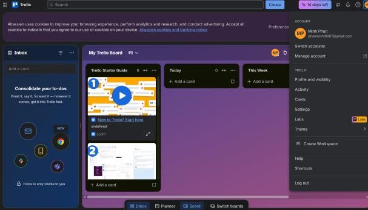
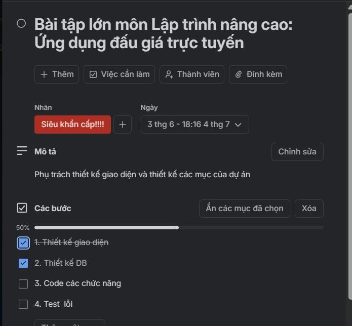

Tổng quan
Dự án nhóm là nghiên cứu và phát triển ứng dụng đấu giá trực tuyến thời gian thực. Vai trò cá nhân: lập trình viên Backend và phụ trách quản trị dữ liệu hệ thống trong một tuần, từ 28/05/2026 đến 05/06/2026.
Trọng tâm: biến công cụ trực tuyến thành quy trình làm việc có trạng thái, có người chịu trách nhiệm và có tiêu chí nghiệm thu.
Hệ công cụ cộng tác
Trello
Quản lý tác vụ theo Agile/Kanban, dùng nhãn đỏ/vàng/xanh để phân cấp khẩn cấp, cốt lõi và hoàn thành.
GitHub
Biên soạn API Specifications, kịch bản kiểm thử, thảo luận comment và lưu vết thay đổi.
Google Drive
Lưu mã nguồn, dữ liệu mẫu, ERD và phân quyền Viewer/Editor theo vai trò.
Quy trình cá nhân
Cập nhật Trello 3 lần/tuần, chuyển thẻ qua To Do, In Progress, Review và gắn link mã nguồn liên quan.
Kết quả và minh chứng
Các thách thức chính gồm race condition khi đặt giá giây cuối, lệch API response giữa frontend/backend và trôi thông tin trên không gian số. Giải pháp là trực quan hóa luồng xử lý, lập trang API Contract và áp dụng nguyên tắc không giao việc bằng chat rời rạc.


Bài học
Bài học lớn nhất là công nghệ chỉ là công cụ hỗ trợ; tư duy quản lý và ý thức trách nhiệm mới quyết định hiệu suất. Với dự án phần mềm, giao tiếp có cấu trúc quan trọng không kém code.